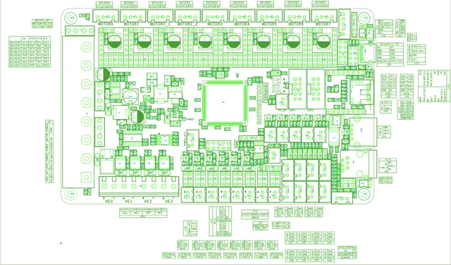
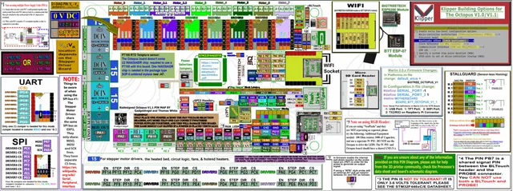
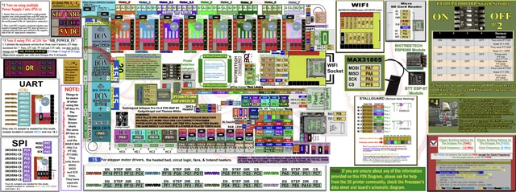
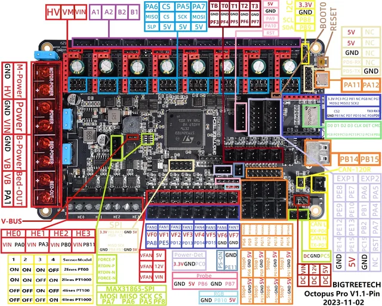
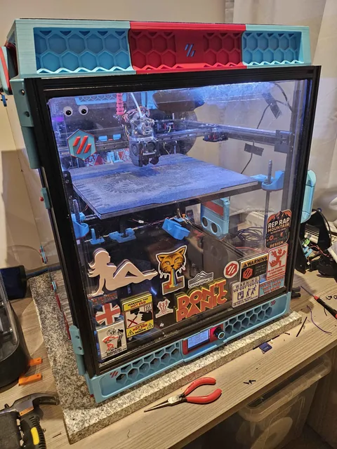

Building or tuning a Voron
Belts, input shaping, levelling and the macros that start every print.
Voron · Klipper · Bambu · Tronxy · Biqu · Prusa · Anycubic · Qidi
More than eight years of guides, fixes, working configs, pinouts and hard-won recommendations from running Voron, Klipper and Bambu machines as well as Tronxy, Biqu, Prusa, Anycubic and Qidi printers, gathered from one repository into one searchable site.
Pick the situation you are in and follow the trail.
Belts, input shaping, levelling and the macros that start every print.
Clogs, layer shifts, poor adhesion and wet filament, roughly in the order worth checking.
Feeding failures, a slot flashing red and a stuck cutter.
From a blank SD card to a printer that answers in Mainsail.
Every folder of the repository, presented as a section you can browse.
Bookmark explorer
A curated bookmark collection for Voron and 3D printing, browsable and searchable here or importable into your own browser.




Pinout library
BTT Octopus, Octopus Pro, SKR Mini, EBB36 and Fly toolhead boards, Raspberry Pi GPIO and more, full resolution on click.

Featured build
A Formbot Trident rebuilt piece by piece: Hypernova toolhead, Cartographer probe, Mellow 5160 drivers, 48V motion and the Klipper plugins it runs.
Two companion projects from the same hobby: a dashboard launcher and a Discord bot.

One window for your Klipper temperature dashboards
A small Windows launcher that starts your Qidi and Voron temperature dashboards and a webcam restart helper from one window, with live logs and per-printer config. The dashboards drop straight into OBS Studio as Browser Source overlays.

A snarky 3D printer Discord bot
A self-hosted Discord bot that answers with a 3D printing put-down, for politely tormenting your friends' prints. Invite it to your server then send the command in any channel it can read.
Command: !printquote
Voron and Klipper reward tinkering but the knowledge is scattered: a pinout on one forum, a drying temperature on another, the macro you need buried in a Discord thread from years ago.
So this repository is a working notebook, kept public. The configs are the ones that ran on real machines; the recommendations are things actually bought and used; the guides are the write-ups worth finding the first time. If it saves you an evening of searching, it has done its job.
Anyone running or building a Voron, a Klipper printer or a Bambu machine, from first setup through tuning and troubleshooting. Much of it is Voron-focused but the guides on drying, adhesion, slicers and clogs apply to any FDM printer.
They are real configs shared as reference. Never flash another machine's config wholesale: treat them as a guide, match them to your own hardware and pins, then test carefully.
Browse and filter them in the bookmark explorer. To take them with you, download the export and import it through your browser's bookmark manager.
Yes. The repository and this site are free and open source under the GNU GPL-3.0 licence. A coffee donation is welcome but entirely optional.
It is a personal knowledge base, so it reflects its author's own printers and experience. Open an issue on the repository if something is out of date or you know a resource worth adding.
The notebook is free and always will be. If it saved you an evening, a coffee helps keep it maintained.
Type to search every page, config file, bookmark and tool pick.